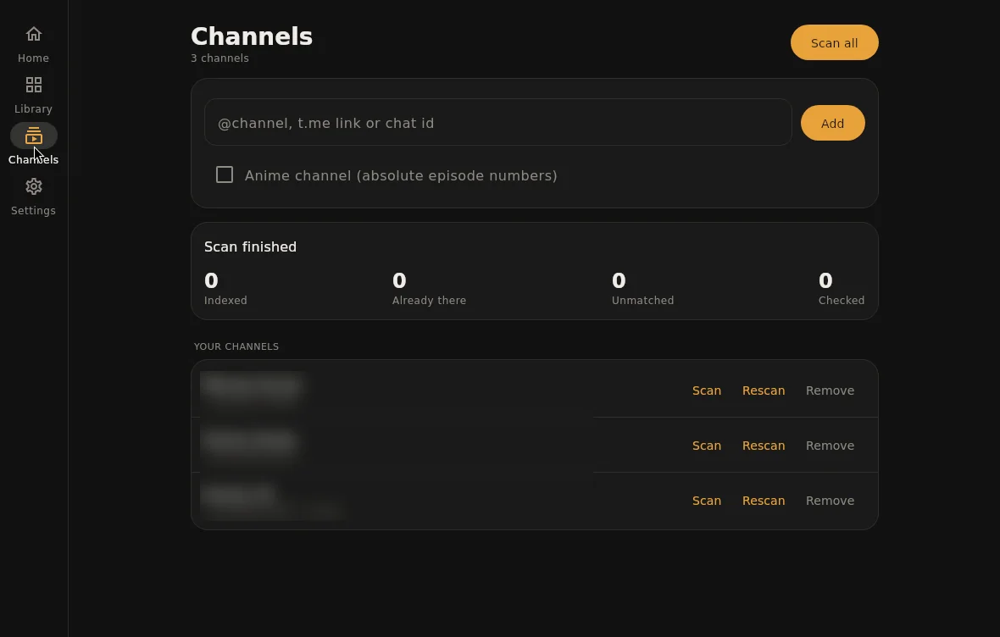

Setup guide
From install to the first play.
About ten minutes. You need a Telegram account that is a member of the channels you want to watch, and Stremio or Nuvio on the device you watch on.
Before you start
- Pick the device that runs TeleStremio. It runs the addon, so it should be on whenever you watch: an Android TV box, a phone on charge, a computer or a small server.
- Keep it on the same network as your TV or player, or give it a public address later (Watching away from home).
- Join your channels in Telegram first. TeleStremio only sees channels and groups your account can open.
1 · Install
- Download the APK from the download section. If you're unsure which one, take universal.
- Open it and allow installs from your browser or file manager when Android asks.
- On Android TV, the free Downloader app from the Play Store can fetch the APK with the remote.
TeleStremio checks for new versions twice a day and tells you, even when it's closed. Updating keeps your library.
Quickest: open PowerShell and paste this. It downloads the newest installer and runs it.
irm https://weebzone.github.io/TeleStremio/install.ps1 | iex
Or by hand:
- Download the .msi and run it.
- Windows SmartScreen may warn about an unknown publisher: choose More info → Run anyway.
- Open TeleStremio from the Start menu.
Quickest: open Terminal and paste this. It puts TeleStremio in Applications and skips the "unidentified developer" prompt.
curl -fsSL https://weebzone.github.io/TeleStremio/install.sh | sh
Or by hand:
- Download the .dmg (Apple Silicon: M1 and newer) and drag TeleStremio into Applications.
- The app isn't notarized yet, so the first time, right-click it → Open, then confirm.
Quickest: paste this in a terminal. On Debian or Ubuntu it installs the package; elsewhere it sets up the jar with a launcher and a menu entry.
curl -fsSL https://weebzone.github.io/TeleStremio/install.sh | sh
Or by hand, on Debian or Ubuntu:
sudo mkdir -p /etc/xdg/menus/applications-merged && sudo apt install ./telestremio_*_amd64.deb
Elsewhere, keep libtdjni.so next to the jar and run it with Java 17 or newer:
java -jar telestremio-linux-x64.jar
No screen needed. Copy the jar and libtdjni.so to the server and start it headless; it signs in from the terminal. See Running on a server.
java -Xmx384m -jar telestremio-linux-x64.jar --headless
2 · Sign in to Telegram
- Enter your phone number. The country code is filled in for you.
- Type the code Telegram sends to your Telegram app. Never forward that code to anyone or any chat: Telegram blocks the login if you do.
- If you use two-step verification, enter that password.
On a computer you can scan a QR code instead: Telegram on your phone → Settings → Devices → Link Desktop Device. TeleStremio shows up in that list as its own device; you can end the session there at any time.
3 · Add your channels and scan
- Open Channels and paste an @username, a t.me link or a chat id.
- Tick Anime for channels that number episodes absolutely (One Piece 1123 rather than S21E35).
- Press Scan. The first scan reads the whole channel, newest first; you can watch while it runs.

4 · Turn on the addon
- On Home, switch the addon server on. Its address appears underneath, for example:
http://192.168.1.20:11471/manifest.json
That address is what you give Stremio or Nuvio. It changes if the device gets a new IP on your network; Stremio accounts linked in step 5 follow it automatically.
On Android, let TeleStremio run in the background: Settings → Apps → TeleStremio → Battery → Unrestricted. Otherwise Android may stop the addon while the screen is off.
5 · Watch in Nuvio
- In Nuvio, open Addons and paste the addon address.
- For ready-made folders (Discover, Streaming Platforms, Regional), copy Nuvio collection on TeleStremio's Home and import it in Nuvio. It looks like this:
http://192.168.1.20:11471/nuvio-collection.json
Only folders backed by your library show up: a Netflix folder appears once your channels have Netflix titles.
5 · Watch in Stremio
Stremio's install box refuses plain http:// addresses from other devices, so link the addon to your Stremio account instead:
- In the TeleStremio phone app, open Settings → Stremio account.
- Sign in with your Stremio email and password, then press Sign in & install. The password goes to Stremio once and isn't stored.
- Restart Stremio on your TV or computer. TeleStremio's catalogs and streams are there, and the account is updated when the address changes.
Better matches and your language
Out of the box, titles are matched with Cinemeta. Free API keys from TMDB and TVDB give better matches, artwork and the Trending catalog:
- Create a TMDB key at themoviedb.org → Settings → API, and optionally a TVDB key.
- Paste them under Settings → Metadata and save.
- Pick a metadata language to see titles and descriptions in it. Rescan a channel to update titles already in the library.
Watching away from home
The addon listens on your local network. To reach it from elsewhere, give it an address other devices can open and set it under Settings → Server → Public host:
- Tailscale on both devices is the easiest: turn on Use Tailscale address and the addon advertises its Tailscale address.
- Or put a domain with HTTPS in front of the device and enter that domain as the public host.
Backups and moving devices
With Back up to Telegram on, the catalog is saved to your Saved Messages a while after it changes (at most every six hours). After a reinstall or on a new device, sign in with the same account and the app offers to restore it.
You can also export and import a file under Settings → Backup. A library of 100,000 files backs up to about 2 MB.
Running on a server
Start the jar with --headless. It asks for your phone number and code once, then starts the addon whenever it runs. Type these at its prompt:
add @mychannel # add a channel (add "anime" at the end for anime) scan # scan every channel restore # restore the catalog from Saved Messages status # addon address and scan progress quit
Ports: 11471 for the addon and 11472 for streams. Keep them closed to the internet unless you mean to share them; put a domain with HTTPS in front if you want access from outside.
If something goes wrong
Stremio shows no TeleStremio catalogs
Turn on Settings → Catalog → Show catalogs in Stremio, then install the addon again (or press Install / update under Stremio account).
A title is missing or matched to the wrong film
Add a TMDB key, or put the IMDb link in the post's caption: TeleStremio reads tt1234567 and IMDb or TMDB links, including links hidden behind words.
Playback stops when the screen turns off
Android is pausing the app. Set its battery use to Unrestricted (step 4).
Something else
Open Settings → Logs, press Share and send the log with a short description of what you did.